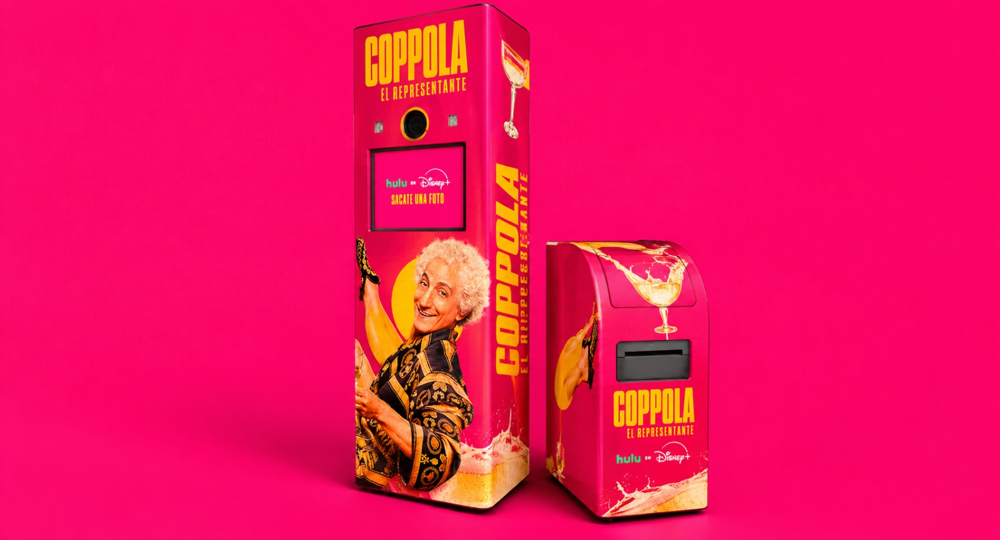
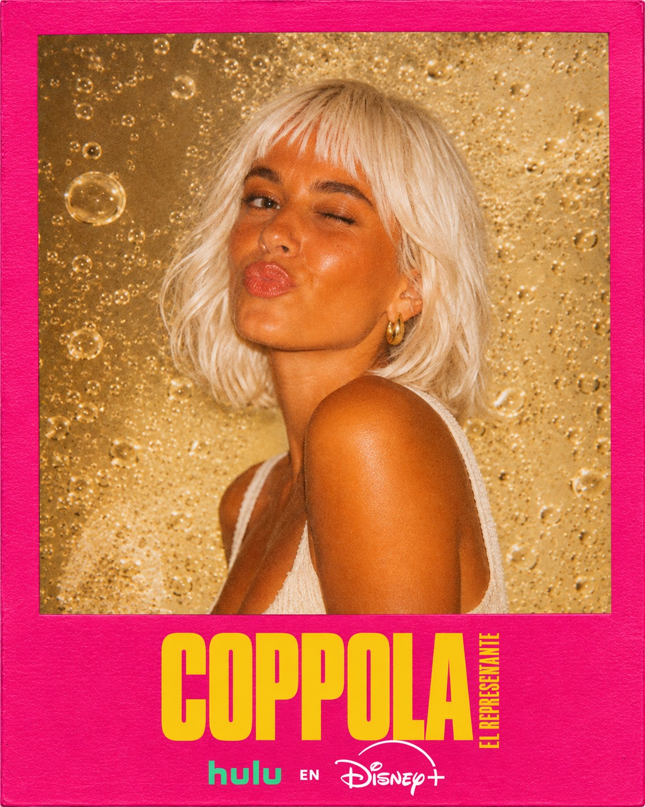
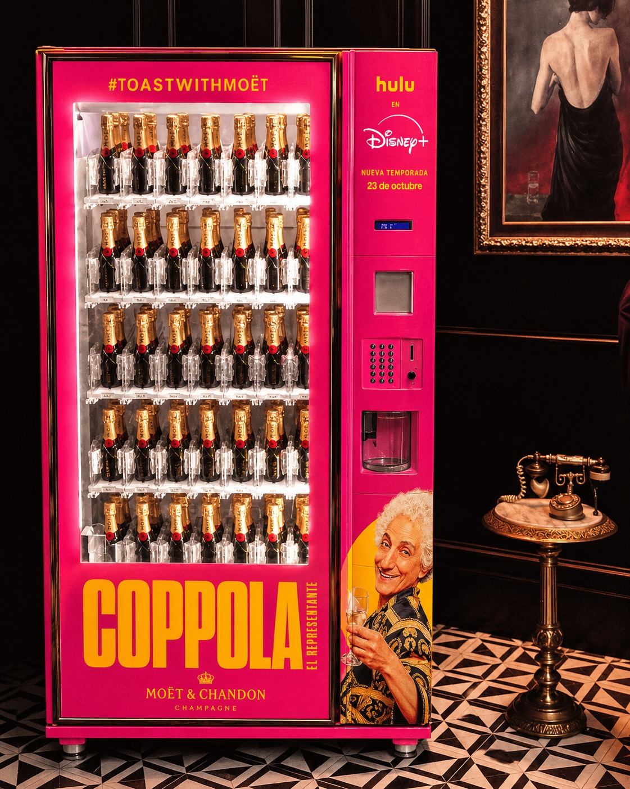

Ideas de activación para el lanzamiento de la nueva temporada de la serie Coppola. Basadas en lo extravagante del lujo de la época, que muestra la serie, desarrollamos una experiencia de entretenimiento para dar qué hablar. Nos inspiramos en las imágenes de campaña para realizar un "Corcho mecánico" que refiere a la fiesta que sucede alrededor de destapar una botella de champagne.
Opciones de locaciones para activar:
Juan B Justo y Santa Fe
Rosedal de Palermo
Cerca de Estadios de fútbol
Otras activaciones:
01


Photobooth que genera una polaroid intervenida con IA para llevarte una foto tuya con la estética de Coppola: pelo blanco, bronceado naranja, fondo de burbujas de champagne.
02

Máquina expendedora de botellitas de champagne personalizadas.